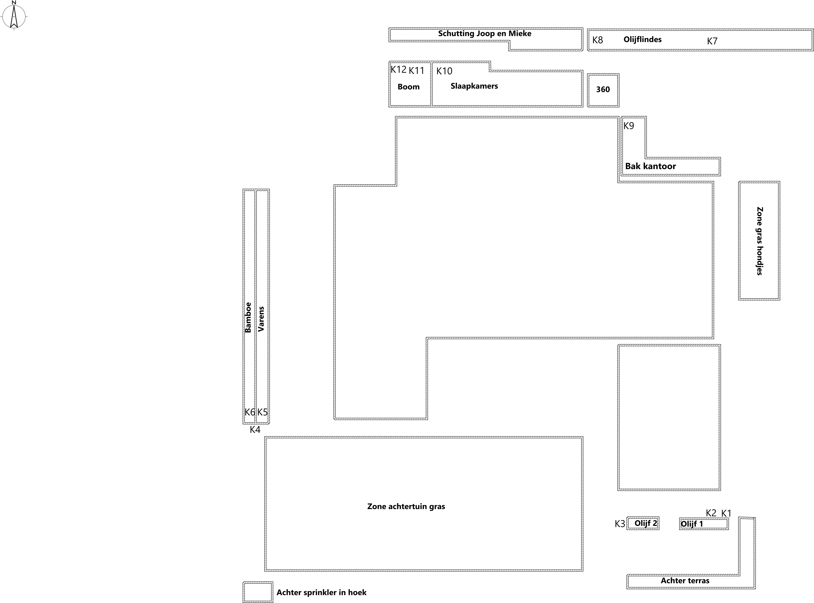

Zet rechts eerst de gewenste Home Assistant hoofdzone aan. Alle bijbehorende delen krijgen dan standaard water en alle handmatige kranen staan open. Tik daarna op een vak in de tekening om dat deel handmatig uit te schakelen.
